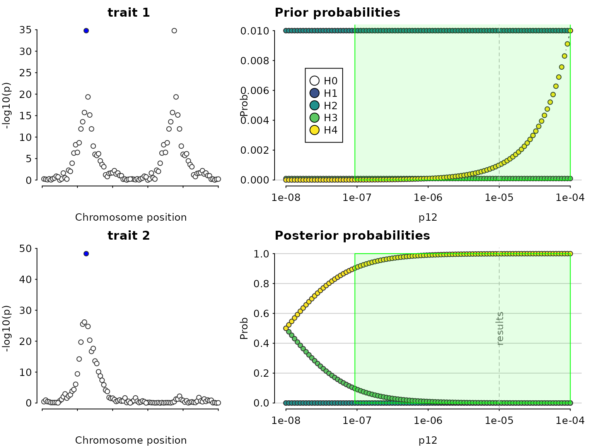
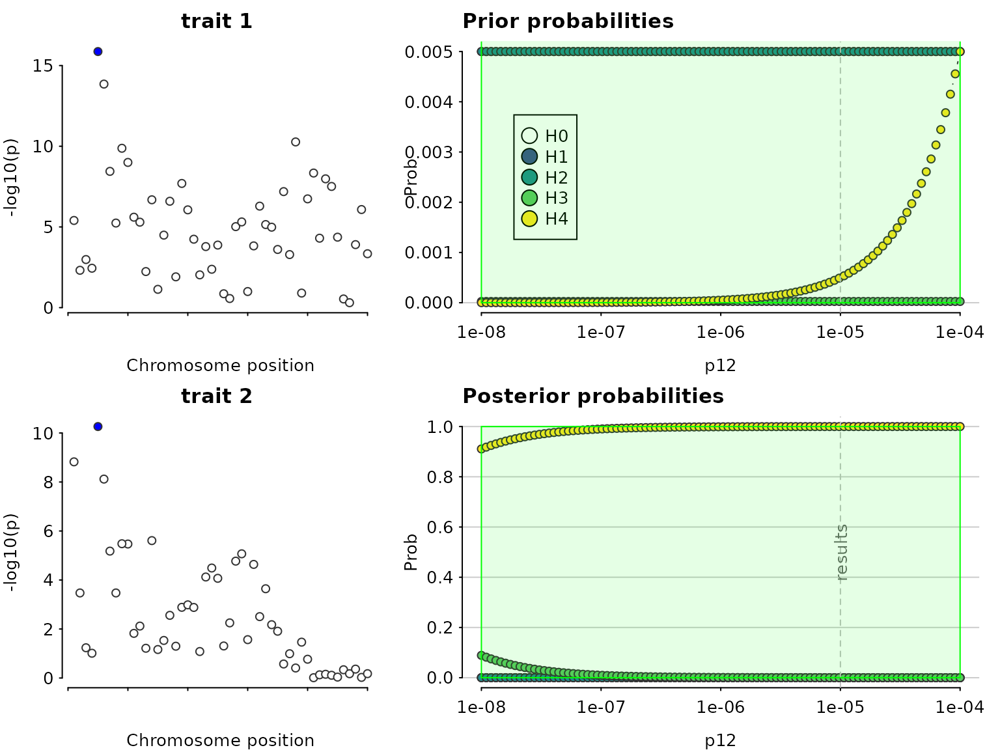
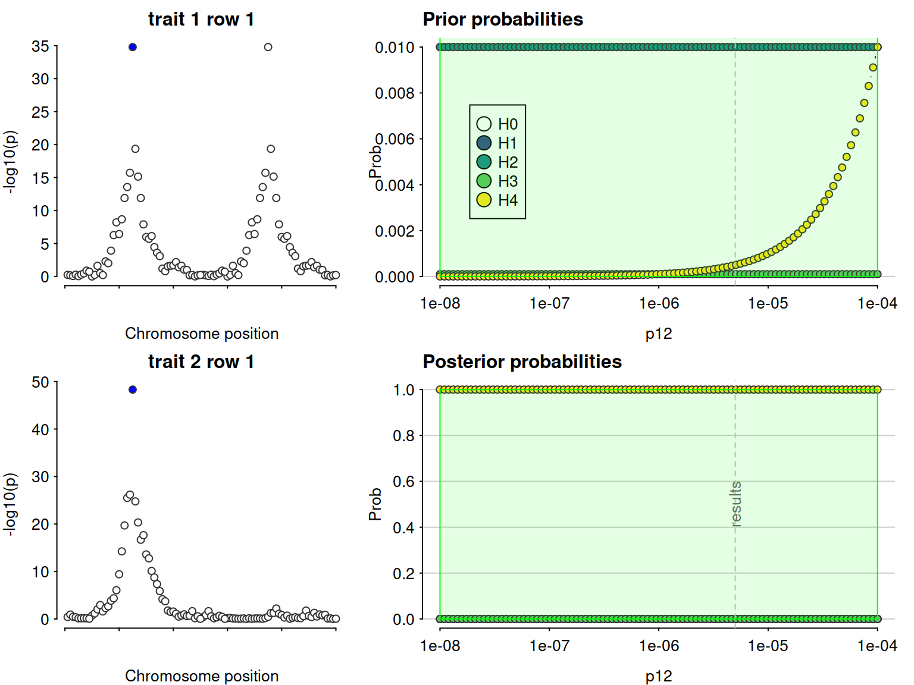
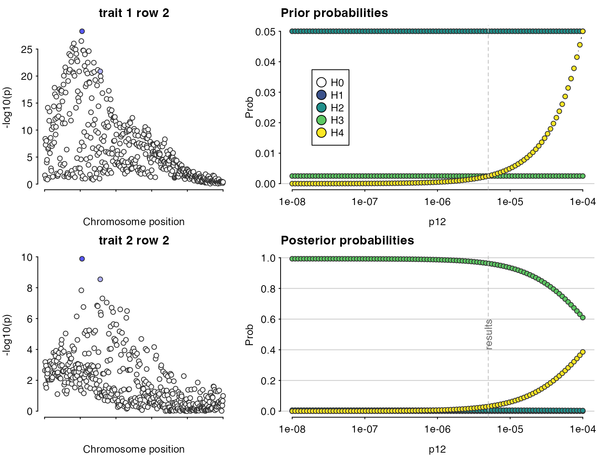

vignettes/a06_SuSiE.Rmd
a06_SuSiE.RmdWe load some simulated data.
## This is coloc version 6.0.0Datasets 3 and 4 are constructed to deliberately break the single
causal variant assumption in coloc.abf().
par(mfrow=c(2,1))
plot_dataset(D3, main="Dataset D3")
plot_dataset(D4, main="Dataset D4")
First, let us do a standard coloc (single causal variant) analysis to serve as a baseline comparison. The analysis concludes there is colocalisation, because it “sees” the SNPs on the left which are strongly associated with both traits. But it misses the SNPs on the right of the top left plot which are associated with only one trait.
my.res <- coloc.abf(dataset1=D3, dataset2=D4)## PP.H0.abf PP.H1.abf PP.H2.abf PP.H3.abf PP.H4.abf
## 8.78e-26 6.80e-07 1.53e-22 1.85e-04 1.00e+00
## [1] "PP abf for shared variant: 100%"
class(my.res)## [1] "coloc_abf" "list"
## print.coloc_abf
my.res## Coloc analysis of trait 1, trait 2##
## SNP Priors## p1 p2 p12
## 1e-04 1e-04 1e-05##
## Hypothesis Priors## H0 H1 H2 H3 H4
## 0.892505 0.05 0.05 0.002495 0.005##
## Posterior## nsnps H0 H1 H2 H3 H4
## 5.000000e+02 8.775708e-26 6.797736e-07 1.529399e-22 1.848705e-04 9.998144e-01
sensitivity(my.res,"H4 > 0.9")## Results pass decision rule H4 > 0.9
Even though the sensitivity analysis itself looks good, the Manhattan plots suggest we are violating the assumption of a single causal variant per trait.
coloc has adopted the SuSiE framework for fine mapping in the presence of multiple causal variants. This framework requires the LD matrix is known, so first check our datasets hold an LD matrix of the right format. =check_dataset= should return NULL if there are no problems, or print informative error messages if there are.
check_dataset(D3,req="LD")## NULL
check_dataset(D4,req="LD")## NULLSuSiE can take a while to run on larger datasets, so it is best to run once per dataset with the =runsusie= function, store the results and feed those into subsequent analyses. =runsusie= is just a wrapper around the =susie_rss= function in the susieR package that automates running until convergence and saves a little extra information about snp names to make subsequent coloc processing simpler. Here, it does indeed find two signals for dataset D3 (there are two rows in the credible sets summary) and one for dataset D4.
S3=runsusie(D3)## running max iterations: 100## converged: TRUE
summary(S3)##
## Variables in credible sets:
##
## variable variable_prob cs
## 105 0.777112364 1
## 89 0.395106280 2
## 87 0.271833777 2
## 82 0.106275736 1
## 103 0.080325924 1
## 81 0.057211679 2
## 80 0.051878567 2
## 84 0.037874443 2
## 68 0.036058478 2
## 97 0.030410224 2
## 75 0.018683900 2
## 113 0.014731357 2
## 69 0.011078296 2
## 58 0.010512961 2
## 73 0.008534130 2
## 108 0.007895691 2
##
## Credible sets summary:
##
## cs cs_log10bf cs_avg_r2 cs_min_r2 variable
## 1 8.626019 0.6743405 0.5947188 82,103,105
## 2 3.492207 0.6237635 0.4582396 58,68,69,73,75,80,81,84,87,89,97,108,113
S4=runsusie(D4)## running max iterations: 100
## converged: TRUE
summary(S4)##
## Variables in credible sets:
##
## variable variable_prob cs
## 105 0.9051715 1
## 156 0.0605820 1
##
## Credible sets summary:
##
## cs cs_log10bf cs_avg_r2 cs_min_r2 variable
## 1 4.940381 0.5047112 0.5047112 105,156With these susie output objects stored, we can colocalise every pair of signals. This analysis says the first pair, tagged by s25.1 and s25 for datasets D3 and D4, do not colocalise (posterior for H3 is close to 1), whilst the second pair, tagged by the same SNP, s25, for both datasets, do (posterior for H4 is close to 1).
if(requireNamespace("susieR",quietly=TRUE)) {
susie.res=coloc.susie(S3,S4)
print(susie.res$summary)
}## nsnps hit1 hit2 PP.H0.abf PP.H1.abf PP.H2.abf PP.H3.abf
## <int> <char> <char> <num> <num> <num> <num>
## 1: 500 s105 s105 3.079008e-14 6.507291e-07 1.342030e-10 0.0008379729
## 2: 500 s89 s105 1.422896e-06 2.209787e-04 6.201896e-03 0.9631063078
## PP.H4.abf idx1 idx2
## <num> <int> <int>
## 1: 0.99916138 1 1
## 2: 0.03046939 2 1Note that because we are doing multiple colocalisations, sensitivity() needs to know which to consider, and we need to give it the datasets used if we want to see the Manhattan plots.
if(requireNamespace("susieR",quietly=TRUE)) {
sensitivity(susie.res,"H4 > 0.9",row=1,dataset1=D3,dataset2=D4)
sensitivity(susie.res,"H4 > 0.9",row=2,dataset1=D3,dataset2=D4)
}## Results pass decision rule H4 > 0.9
## Results fail decision rule H4 > 0.9
runsusie() is a wrapper around
susieR::susie_rss(). It adds some colnames to the returned
objects (so that snps can be identified easily) and repeats the calls to
susie_rss() until convergence is achieved.
susie_rss() has many other options and you should look
at them if runsusie() is not giving the output you expect.
They can be passed directly through runsusie().
if(requireNamespace("susieR",quietly=TRUE)) {
?susieR::susie_rss
}One option I have varied to help SuSiE detect weaker signals, is the
coverage parameter. By default susie_rss looks for signals
for which it can form a 95% credible set. By reducing the coverage, we
can find weaker signals. For example we find nothing in this weaker
signal dataset
if(requireNamespace("susieR",quietly=TRUE)) {
## make a dataset with a weaker signal
D5=D3
D5$varbeta=D5$varbeta * 4
D5$N=D5$N / 2
par(mfrow=c(1,2))
plot_dataset(D3, main="original D3")
plot_dataset(D5, main="weaker signal D5")
summary(runsusie(D5)) # default coverage 0.95
}But by reducing the coverage we can find one signal
if(requireNamespace("susieR",quietly=TRUE)) {
summary(runsusie(D5,coverage=0.1)) # lower coverage
}These values are just for illustration, I probably wouldn’t believe a signal in a real dataset with a . They let you find weaker signals, but the signals they find may not be real! coloc results should be treated with caution. Nonetheless, this may be worthwhile if you have a dataset with a weak signal which you know has replicated in independent data.
if(requireNamespace("susieR",quietly=TRUE)) {
S5=runsusie(D5,coverage=0.1) # lower coverage
summary(S5)
res=coloc.susie(S5,S4)
print(res$summary)
}